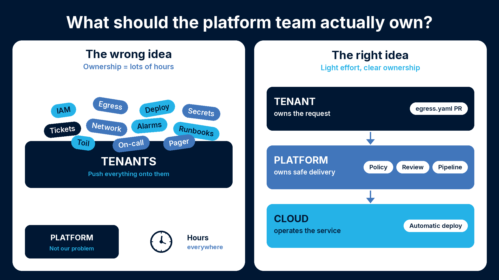

What should the platform team actually own?
The answer seems obvious: as little as possible. Push down as much as possible to the tenants! Oh, wait. The tenants don't want to own too much either, especially when it's platform-related and outside their domain of competence.
So what should be done? The underlying assumption here is:
ownership = lots of engineering hours
But it doesn't have to be this way. I see two main answers to the problem:
- Use managed services from your cloud provider as much as possible.
- Automate as much as possible.
Using managed services makes sense for both the platform team and the tenants. AWS, for example, has entire teams dedicated to operating and improving each one of its services at a scale that most companies could never replicate. Why not let them own your databases or observability infrastructure? You still need to own the configuration, of course, but that's much lighter work than managing a PostgreSQL or Prometheus installation yourself.
Automation can make things much simpler for everyone too. For example, a tenant could configure its egress ports through a simple YAML file in a pull request owned by the tenant. The platform team reviews and approves the pull request, and the configuration is then deployed automatically.
The ownership boundaries are clear: The tenant owns what it needs. The platform team owns the decision and how that request is safely delivered. And yet the workload is light for everyone involved.
My argument is simple:
Let responsibilities follow your governance structures, and use managed services and automation to minimise the effort required to exercise that ownership.
The goal isn't to minimise ownership. It's to minimise the effort required to exercise it.